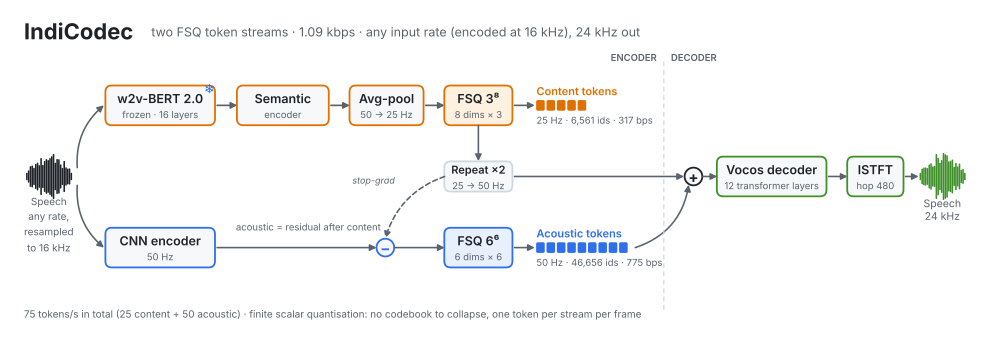
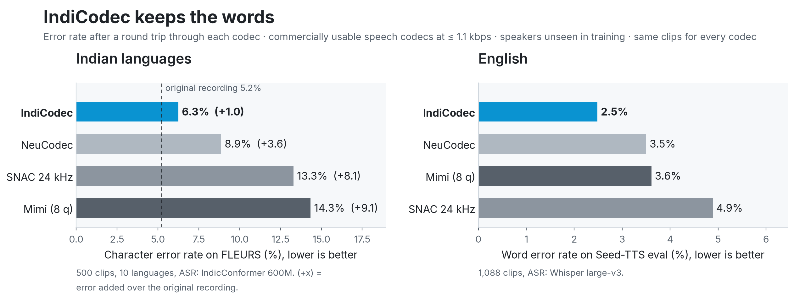
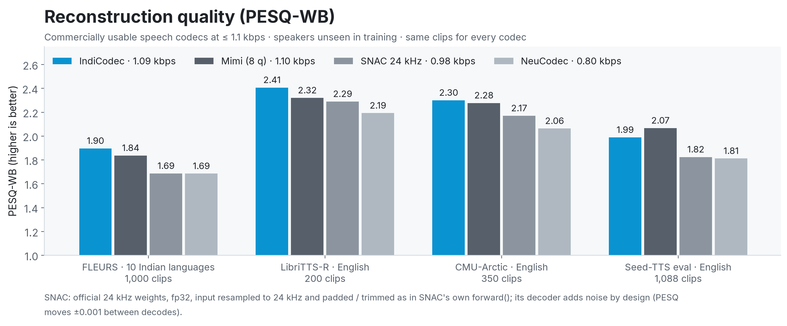
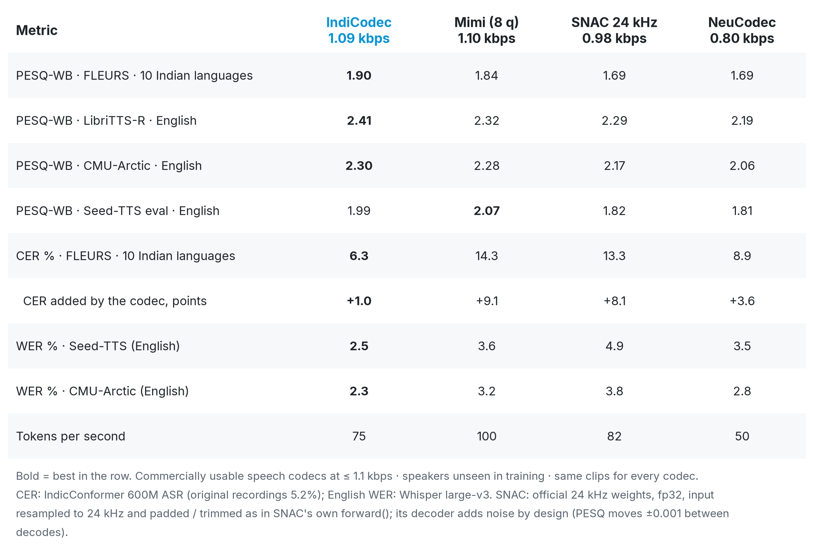
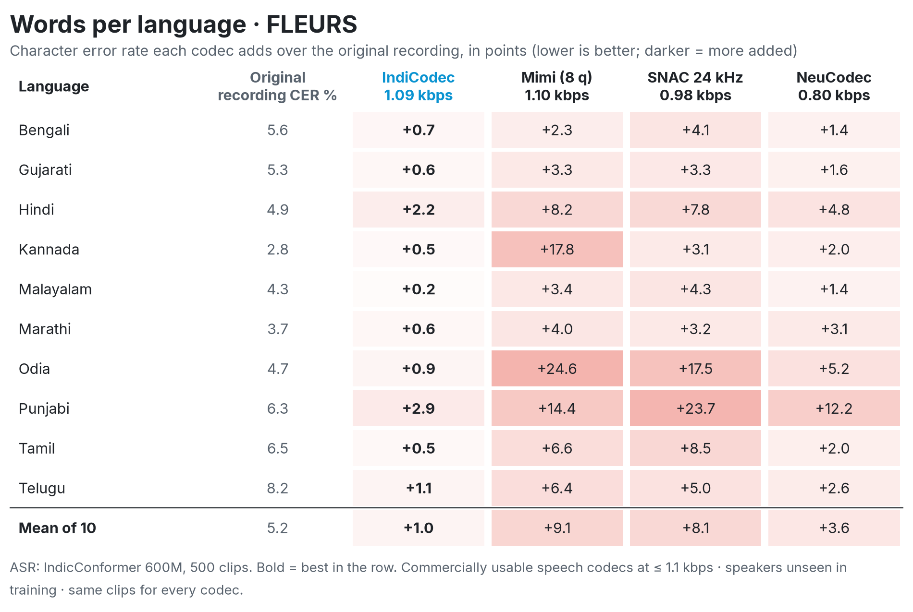

A 1.09 kbps speech codec for speech language models and TTS, trained mostly on English and 10 Indian languages and strongest on Indian languages. Two FSQ token streams: content at 25 Hz and acoustic at 50 Hz, decoded to 24 kHz.
Content tokens carry the words; acoustic tokens carry what content leaves out (voice, timbre, room).

Commercially usable speech codecs at about 1 kbps, on speakers not seen in training. Every codec is scored on the same clips.




Each row is one clip: the original recording, then each codec's reconstruction. Click to play; clicking another stops the first.
| Clip | Originalreference | IndiCodec1.09 kbps | Mimi (8 q)1.10 kbps | SNAC 24 kHz0.98 kbps | NeuCodec0.80 kbps |
|---|---|---|---|---|---|
| Bengali · maleসংস্কৃতির দিক নির্ধারণের ক্ষেত্রে একটি বড় উপাদান ছিল শ্লেগাল, গোথা, ফিশ্তাদের মতো লেখকদের রোম্যান্টিসিজম। | |||||
| Bengali · maleতিনি এই কমানোর জন্য কোনও পরিমাণ স্থাপন করেননি, বলেছিলেন যেগুলিচীনের অর্থনৈতিক আয়ের ভিত্তিতে তৈরি করা হবে। | |||||
| Gujarati · femaleમિશ્રધાતુમાં બે કે તેથી વધારે ધાતુઓ હોય છે. પિરિઓડિક ટેબલમાં ઘણાં તત્ત્વો હોય ચે તે ભૂલશો નહીં. | |||||
| Gujarati · maleકોચામ વેલી - ચિલીનું મુખ્ય ચઢાણ સ્થળ, જે દક્ષિણ અમેરિકાના યોસેમિટી તરીકે ઓળખાય છે, જેમાં વિવિધ પ્રકારના ગ્રેનાઈટની મોટી દિવાલો અને ક્રેગ્સ છે. | |||||
| Hindi · femaleअपनी सरकार के अलावा आप अन्य देशों की सरकारों की सलाह ले सकते हैं. हालाँकि, उनकी सलाह उनके नागरिकों को ध्यान में रखकर दी जाती हैं. | |||||
| Hindi · maleलीक के अनुसार, दस्तावेज़, सीमा विवाद को संदर्भित करेगा, जो फ़िलिस्तीन 1967 के मध्यपूर्व युद्ध से पहले सीमाओं के आधार पर चाहता है. | |||||
| Kannada · femaleಗೊಯೆಥೆ, ಫಿಶೆ ಮತ್ತು ಶ್ಲೆಗೆಲ್ರಂತಹ ಬರಹಗಾರರಿಂದ ಪಡೆದ ಸಾಂಸ್ಕೃತಿಕ ನಿಯಂತ್ರಣವಾದದ ದೊಡ್ಡ ಅಂಶವನ್ನು ರೊಮ್ಯಾಂಟಿಸಿಸಂ ಹೊಂದಿತ್ತು. | |||||
| Kannada · maleನಿಮ್ಮದೇ ಸಲಹೆಯನ್ನು ಹೊರತುಪಡಿಸಿ ನೀವು ಸರ್ಕಾರ ತನ್ನ ಪ್ರಜೆಗಳಿಗಾಗಿ ವಿನ್ಯಾಸಗೊಳಿಸಿದ ಸಲಹೆಯನ್ನು ಕುರಿತು ಯೋಚಿಸಬಹುದು. | |||||
| Malayalam · femaleറൊമാന്റിസിസത്തിന് ഗൊഥെ, ഫിച്ചെ, ഷ്ളെഗൽ തുടങ്ങിയ എഴുത്തുകാരിൽ നിന്ന് ലഭിച്ച സാംസ്കാരിക സമ്പ്രദായത്തിന്റെ ഒരു വലിയ ഘടകമുണ്ടായിരുന്നു. | |||||
| Malayalam · femaleമുറിവുകൾക്കായി അദ്ദേഹം ഒരു ചിത്രം സജ്ജമാക്കിയിട്ടില്ല, ചൈനയുടെ സാമ്പത്തിക ഉൽപാദനത്തെ അടിസ്ഥാനമാക്കിയാണ് അവ നിർമ്മിക്കുക എന്ന് പറഞ്ഞു. | |||||
| Marathi · female2 कोरड्या पावडर एकत्र फिरवा आणि नंतर स्वच्छ ओल्या हातांनी ते एका बॉलमध्ये पिळून घ्या. | |||||
| Marathi · maleकोकामो दरी - चिलीमधील प्रमुख चढाईचे ठिकाण जिथे ग्रॅनाईट च्या वेगवेगळ्या भिंती आणि सुळके आहेत जे दक्षिण अमेरिकेचे योसेमाईट म्हणून ओळखले जाते. | |||||
| Odia · femaleଚୀନ୍ର ଅର୍ଥନୈତିକ ଉତ୍ପାଦନକୁ ଆଧାର କରି ତାହା ପ୍ରସ୍ତୁତ କରାଯିବ ବୋଲି କହି ସେ କାଟଛାଣ୍ଟ ପାଇଁ କୌଣସି ଅଙ୍କ ସ୍ଥିର କରିନାହାଁନ୍ତି। | |||||
| Odia · female2ଟି ଶୁଖିଲା ପାଉଡରକୁ ଏକାଠି ଗୋଳାଇ ଦିଅନ୍ତୁ ଏବଂ ତା’ପରେ, ସଫା ଓଦା ହାତରେ, ତାହାକୁ ଚାପି ବଲ୍ ଆକୃତିର କରି ଦିଅନ୍ତୁ। | |||||
| Punjabi · femaleਰੋਮਾਂਚਕਤਾ ਵਿੱਚ ਗੋਏਥ, ਫਿਚਟ ਅਤੇ ਸ਼ਲੇਗਲ ਵਰਗੇ ਲੇਖਕਾਂ ਤੋਂ ਪ੍ਰਾਪਤ ਸੱਭਿਆਚਾਰਕ ਨਿਰਧਾਰਣਵਾਦ ਦੀ ਇੱਕ ਵੱਡੀ ਭੂਮਿਕਾ ਸੀ। | |||||
| Punjabi · maleਪਹਿਲਾਂ ਉਸਨੂੰ ਗ੍ਰੇਟ ਯਾਰਮੂਥ ਵਿੱਚ ਜੇਮਜ਼ ਪੇਜਟ ਹਸਪਤਾਲ ਵਿੱਚ ਭਰਤੀ ਕਰਵਾਇਆ ਗਿਆ ਸੀ। | |||||
| Tamil · femaleநீங்கள் உங்கள் சொந்த கருத்தைத் தவிர அரசாங்கங்களின் ஆலோசனையை பெற விரும்பலாம், ஆனால் அவர்களின் ஆலோசனை அவர்களின் குடிமக்களுக்கென உருவாக்கப்பட்டுள்ளது. | |||||
| Tamil · maleஅல்லாய்கள் அடிப்படையில் இரண்டு (2) அல்லது அதற்கு மேற்பட்ட உலோகங்களின் கலவை. தனிம அட்டவணையில் பல தனிமங்கள் உள்ளன என்பதை மறந்து விட வேண்டாம். | |||||
| Telugu · femaleడాక్యుమెంట్, లీక్ ప్రకారం, సరిహద్దుల వివాదాన్ని సూచిస్తుంది, ఇది 1967 మిడ్ఈస్ట్ యుద్ధానికి ముందు సరిహద్దుల ఆధారంగా పాలస్తీనా కోరుకుంది. | |||||
| Telugu · maleరెండు పొడి పొడిలను కలిపి, తరువాత శుభ్రమైన తడి చేతులతో, వాటిని ఒక బంతిలో నొక్కండి. |
| Clip | Originalreference | IndiCodec1.09 kbps | Mimi (8 q)1.10 kbps | SNAC 24 kHz0.98 kbps | NeuCodec0.80 kbps |
|---|---|---|---|---|---|
| bdl · US maleThere was one difficulty, however. | |||||
| slt · US femaleThere was one difficulty, however. | |||||
| clb · US femaleThere was one difficulty, however. | |||||
| rms · US maleThere was one difficulty, however. | |||||
| awb · Scottish maleThere was one difficulty, however. | |||||
| jmk · Canadian maleThere was one difficulty, however. | |||||
| ksp · Indian maleThere was one difficulty, however. |
| Clip | Originalreference | IndiCodec1.09 kbps | Mimi (8 q)1.10 kbps | SNAC 24 kHz0.98 kbps | NeuCodec0.80 kbps |
|---|---|---|---|---|---|
| speaker 1320Hold your head down, and draw in your legs; their formation might tell the truth too early. | |||||
| speaker 7176Had he taken such a prize, he could not have profited by it, having no means of tearing it to pieces. | |||||
| speaker 8555The sailor followed and pulled out the Boolooroo, who, when he saw the terrible goat was captured and tied fast, quickly recovered his courage. | |||||
| speaker 4970It was settled therefore, in the prompt way in which things are settled in New York, that they would start with the rest of the company next morning for the west. |